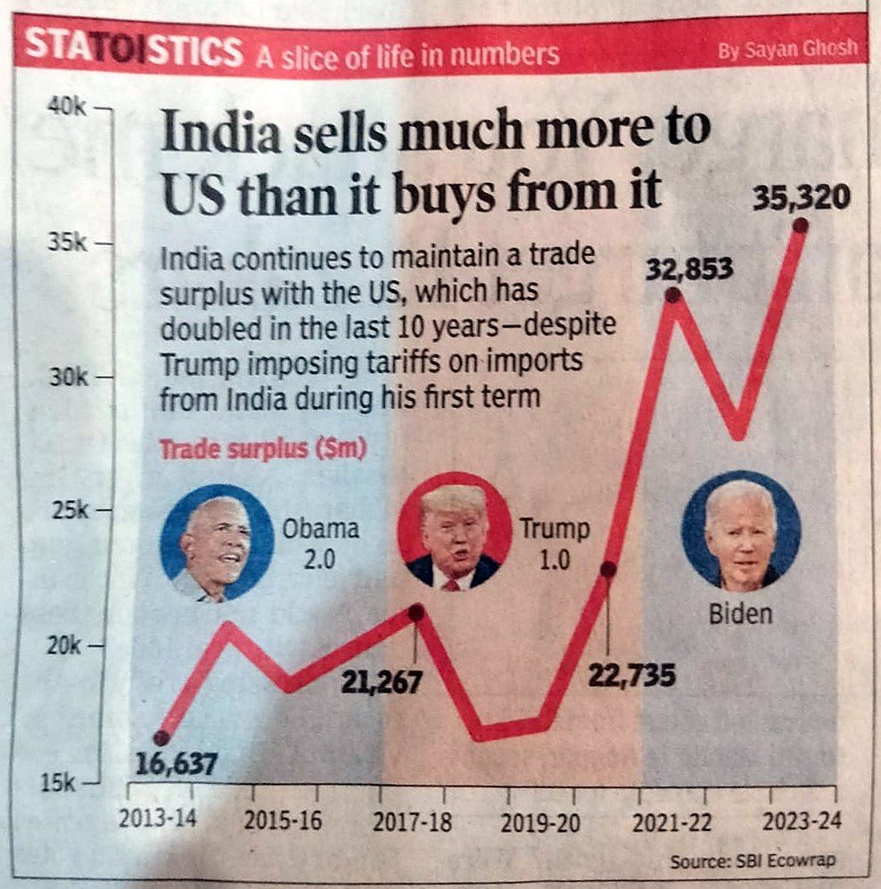

India's trade surplus with the United States more than doubled in ten years, from $16.6 billion in 2013-14 to $35.3 billion in 2023-24. It reached $21.3 billion in 2017-18, dipped over the next two years, then rose to $22.7 billion in 2020-21 and $32.9 billion in 2021-22. The page set that line against Barack Obama's second term, Donald Trump's first and Joe Biden's, and noted that the surplus doubled despite the tariffs Trump put on imports from India during his first term.
